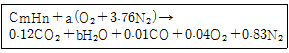
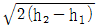
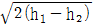
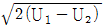
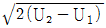
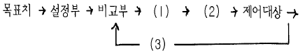
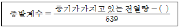

에너지관리산업기사 (2004-09-05 기출문제)
1과목: 열역학 및 연소관리
1. 석탄을 공기를 차단하여 가열해가면 수분 및 보유 gas가 나온다. 그러면 몇 도 이상이면 열분해가 시작되는가?
- 600℃
- 500℃
- 400℃
- 300℃
(정답률: 51%)

2. 다음 중 기체연료의 연소 방법은?
- 확산연소
- 증발연소
- 표면연소
- 분해연소
(정답률: 80%)
3. 다음 중 이론공기량에 대한 올바른 설명은?
- 완전 연소에 필요한 1차 공기량
- 완전 연소에 필요한 2차 공기량
- 완전 연소에 필요한 최소 공기량
- 완전 연소에 필요한 최대 공기량
(정답률: 72%)
4. 다음 설명중 매연의 방지조치로서 부적당한 것은?
- 무리하게 불을 피우지 않도록 한다.
- 통풍을 많게 하여 많은 공기를 주입한다.
- 보일러에 적합한 연료를 선택한다.
- 연소실내의 온도가 내려가지 않도록 공기를 적정하게 보낸다.
(정답률: 88%)
5. 다음중 탄화도의 크기 순서에 따른 석탄의 분류로서 옳은 것은?
- 무연탄 ＞ 역청탄 ＞ 갈탄 ＞ 토탄
- 역청탄 ＞ 갈탄 ＞ 무연탄 ＞ 토탄
- 역청탄 ＞ 무연탄 ＞ 갈탄 ＞ 토탄
- 갈탄 ＞ 역청탄 ＞ 무연탄 ＞ 토탄
(정답률: 68%)
6. 다음 연료 중 총(고위)발열량과 진(저위)발열량이 같은 것은?
- 수소
- 메탄
- 프로판
- 일산화탄소
(정답률: 76%)
7. 중유의 분무연소에 있어서 보통 완전연소에 적합한 입경은 대체로 몇 μm 정도인가?
- 50μm이하
- 100μm이하
- 300μm이하
- 1000μm이하
(정답률: 57%)
8. 미분탄 연소장치의 특징을 설명한 것으로 잘못된 것은?
- 미분탄은 표면적이 크므로 적은 과잉공기율로도 완전연소가 가능하다.
- 사용연료의 범위가 비교적 넓다.
- 소요동력이 크고 회의 비산이 많아서 집진장치가 필요하다.
- 연소효율은 높지만 연소조절이 용이하지 못하다.
(정답률: 53%)
9. 메탄 1Nm3를 공기과잉계수 1.⑤의 공기량으로 완전연소시켰다고 하면 건연소가스량은 몇 Nm3인가?
- 7
- 8
- 9
- 10
(정답률: 54%)
10. 중유가 석탄보다 발열량이 큰 근본 이유는?
- 수소분이 많다.
- 연소속도가 크다.
- 수분이 적다.
- 회분이 적다.
(정답률: 59%)
11. 다음 중 중유 연소방식이 아닌 것은?
- 회전식 버너
- 공기분무식
- 압력 분무식
- 산포식 스토커
(정답률: 79%)
12. 연소가스의 분석결과가 CO2 13.0%, O2 6.0%일 때 (CO2)max은?
- 16.2
- 17.2
- 18.2
- 19.2
(정답률: 64%)
13. 고체 및 액체연료에서의 이론 공기량을 중량(kg/kg)으로 구하는 식을 바르게 표기한 것은? (단, C, H, O, S는 원자기호이다.)
- 1.87 C + 5.6 {H - (0/8) } + 0.7 S
- 2.67 C + 8 {H - (0/8) } + S
- 8.89 C + 26.7 O - 3.33 H + (0 - S)
- 11.51 C + 34.52 H - 4.32(0 - S)
(정답률: 44%)
14. 연소실의 작용에 대하여 설명한 것으로 다음 중 틀린 것은?
- 연소용 공기와 가연분과의 혼합을 잘하게 한다.
- 연료의 착화를 빠르게 한다.
- 연소 효율을 양호하게 한다.
- 통풍력을 증가시킨다.
(정답률: 66%)
15. 프로판(C3H8) 11kg을 이론공기량으로 완전연소시켰을 때의 습연소가스의 부피(Nm3)를 계산하면? (단, 탄소와 수소의 원자량을 각각 12와 1로 계산한다.)
- 115.8
- 127.9
- 133.2
- 144.5
(정답률: 28%)
16. 탄소 1kg을 완전연소시키는데 필요한 이론공기량(Nm3/kg)은?
- 4.89
- 8.89
- 12.89
- 16.89
(정답률: 71%)
17. 다음 중 공기 과잉계수(공기비)를 옳게 나타낸 것은?
- 실제연소 공기량 ÷ 이론공기량
- 이론공기량 ÷ 실제연소 공기량
- 실제연소 공기량 - 이론공기량
- 공급공기량 - 이론공기량
(정답률: 79%)
18. 다음은 댐퍼(damper)를 설치하는 목적에 대하여 설명한 것이다. 이 중 틀린 것은?
- 통풍력을 조절한다.
- 가스의 흐름을 교체한다.
- 가스의 흐름을 차단한다.
- 가스가 새어 나가는 것을 방지한다.
(정답률: 61%)
19. 고위발열량과 저위발열량의 차이는?
- 물의 증발잠열
- 연료의 증발잠열
- CO의 연소열
- H2의 연소열
(정답률: 74%)
20. 연소배기가스 분석결과 CO2, O2, CO 및 N2는 체적비로 각각 0.12, 0.04, 0.01 및 0.83 이었다. 연료가 C와 H로만 이루어져 있다고 가정하고 다음과 같은 화학식을 세웠다. b값은 얼마인가?

- 0.06
- 0.11
- 0.22
- 0.24
(정답률: 50%)
2과목: 계측 및 에너지진단
21. 열역학 제1법칙을 식으로 표현한 것은? (단, q, L, P, V, U는 각각 열량, 외부에 한 일량, 압력, 비체적, 비내부에너지를 표현한다.)
- dq = dU + APdV
- dq = dU - APdV
- dq = dU - AVdP
- dq = dU + AdV
(정답률: 50%)
22. 물의 임계점에 대한 설명이다. 틀린 것은?
- 임계점에서의 (∂P/∂T)V=0 이다.
- 임계점에서의 온도와 압력은 374.15℃, 225.56kg/cm2이다.
- 임계 압력이상에서 포화액과 포화증기는 공존한다.
- 임계상태의 잠열은 0kcal/kg 이다.
(정답률: 68%)
23. 다음 중 P-V선도(P-V chart)에 관한 것은?
- 온도-엔트로피 선도
- 압력-비체적 선도
- 온도-비체적 선도
- 엔탈피-엔트로피 선도
(정답률: 63%)
24. 다음 중 잠열이라 할 수 없는 것은?
- 증발열
- 융해열
- 승화열
- 반응열
(정답률: 74%)
25. 유체가 갖는 성질 중 포화온도와 포화압력의 관계에 있어서 포화압력이 상승하면 포화온도는?
- 상승한다.
- 불변이다.
- 하강한다.
- 일정 관계가 성립하지 않는다.
(정답률: 68%)
26. 공기로서 작동되는 복합(사바테) 사이클에서 압축비가 5, 비열비(=Cp/Cv)가 1.4, 차단비가 1.6, 압력비가 1.8일 때 이론 열효율은?
- 34.6%
- 37.9%
- 43.8%
- 53.9%
(정답률: 39%)
27. △E = Q = Cv△T가 의미하는 것 중 가장 타당한 설명은? (단, E는 내부에너지, Q는 열량, Cv는 정용 분자열용량, T는 온도이다.)
- 이상기체에 가해진 열량은 항상 내부에너지 변화량이 된다.
- 이상기체의 내부에너지 변화는 온도만의 함수이다.
- 내부에너지의 미분은 열량과 같다.
- 실제 기체와 이상기체의 에너지 차이가 곧 열량이다.
(정답률: 61%)
28. 분자량이 16인 메탄(CH4)에 대한 가스상수는 몇 J/㎏℃인가?
- 53
- 29.3
- 287
- 519.6
(정답률: 54%)
29. 습증기를 단열 압축시키는 경우에 대한 설명으로 가장 적당한 것은?
- 압력과 온도는 변화하지 않는다.
- 압력은 상승하며 온도는 변화하지 않는다.
- 압력과 온도가 상승하여 과열증기가 된다.
- 압력은 상승하고 온도는 강하되어 압축 액체가 된다.
(정답률: 52%)
30. 임계상태에 대한 설명으로 가장 적당한 것은?
- 고체, 액체, 기체가 동시에 존재하는 상태
- 임의 압력하에서 포화액선과 건포화증기선이 일치하는 상태
- 아무리 가열해도 온도가 올라가지 않는 상태
- 두 개의 상이 동시에 존재하는 상태
(정답률: 52%)
31. 다음 중 절대온도 T, 압력 P로 표시되는 단열과정에 대한 식으로 올바른 것은? (단, k = Cp/Cv)
- TPk-1 = C
- TPk = C
- TP(k+1)/k = C
- TP(k-1)/k = C
(정답률: 61%)
32. 온도 150℃의 공기 1kg이 V1 = 0.248m3/kg로 부터 V2 = 0.496m3/kg로 될 때까지 단열팽창하였다. 내부에너지의 변화는 몇 kcal/kg인가? (단, Cv = 0.172kcal/kg℃, k = 1.4, (1/2)0.4 = 0.7565 )
- -6.3
- -17.7
- 27.7
- 127.8
(정답률: 53%)
33. 100℃의 끓는 물과 0℃의 얼음을 같은 무게로 섞었더니 그의 온도가 10℃가 되었다. 얼음의 융해열(kcal/kg)을 구하면?
- 40
- 60
- 80
- 100
(정답률: 56%)
34. 공기 표준 사이클에 대한 가정에 해당되지 않는 것은?
- 공기는 밀폐시스템을 이루거나 정상 상태유동에 의한 사이클로 구성한다.
- 공기는 이상기체이고 대부분의 경우 비열은 일정한 것으로 간주한다.
- 연소과정은 고온 열원에서의 열전달과정이고, 배기과정은 저온열원으로의 열전달로 대치된다.
- 각 과정은 가역 또는 비가역 과정이며 운동에너지와 위치에너지는 무시된다.
(정답률: 77%)
35. 다음 중 열과 일에 대한 설명으로 틀린 것은?
- 모두 경계를 통해 일어나는 현상이다.
- 모두 경로함수 이다.
- 모두 불완전 미분형을 갖는다.
- 모두 양수의 값을 갖는다.
(정답률: 80%)
36. 유체가 노즐을 통과할 때 출구 속도(W)의 식은? (단, W1 = 0이라 가정하고, h는 엔탈피, U는 내부에너지)




(정답률: 37%)
37. 터빈에서 70ata, 843.3㎉/㎏으로부터 복수기 압력 0.⑤㎏/cm2까지 단열팽창시 랭킨사이클에서의 펌프일을 고려할 때의 이론 열효율은? (단, 복수기 압력하의 포화수의 엔탈피는 28.7㎉/㎏, 비체적은 0.001m3/㎏이며, 터빈출구에서의 증기엔탈 피는 500.7㎉/㎏이다.)
- 37.9%
- 41.9%
- 45.3%
- 49.2%
(정답률: 48%)
38. 공기 표준 브레이튼사이클에 대한 설명으로 틀린 것은?
- 등엔트로피 과정과 정압과정으로 이루어진다.
- 가스터빈에 대한 이상적인 사이클이다.
- 효율은 압력비에 의해 결정된다.
- 냉동사이클과 같다.
(정답률: 58%)
39. 열역학 제2법칙을 설명한 것으로 틀린 것은?
- 엔트로피는 상태함수이며 가역과정에서 우주의 엔트로피는 일정하다.
- 비가역 단열과정에서 우주의 엔트로피는 증가한다.
- 열은 고온으로부터 저온으로 자동적으로 이동한다.
- 열이 완전히 주위와 계에 아무런 변화를 주지 않고 운동 에너지로 변화할 수 있다.
(정답률: 69%)
40. 중량 1㎏의 가스가 압력 0.5㎏/cm2, 체적 2.5m3의 상태에서 압력 8㎏/cm2, 체적0.2m3의 상태로 변화하였다. 이 때 내부에너지 변화를 무시할 때 엔탈피의 증가량은?
- 8.2㎉/㎏
- 13.6㎉/㎏
- 18.3㎉/㎏
- 21.4㎉/㎏
(정답률: 20%)
3과목: 열설비구조 및 시공
41. 액주에 의한 압력측정에서 정밀측정을 위해 필요하지 않는 보정은?
- 중력의 보정
- 높이의 보정
- 모세관 현상의 보정
- 온도의 보정
(정답률: 73%)
42. 다음 중 가스의 비중을 이용하는 가스 분석계는?
- 도전율식 CO2계
- 열전도율식 CO2계
- 지르코니아식 O2계
- 밀도식 CO2계
(정답률: 75%)
43. 공기의 유속을 피토관으로 측정하여 차압 60mmAq를 얻었다. 피토관 계수를 1로 하여 유속을 계산하면? (단, 공기의 비중량을 1.20kgf/m3로 한다.)
- 28.3m/s
- 31.3m/s
- 34.3m/s
- 37.3m/s
(정답률: 35%)
44. 다음 측정방식 중 물리적 가스분석계가 아닌 것은?
- 오르쟈트식
- 밀도식
- 가스크로마토 그래프식
- 세라믹식
(정답률: 46%)
45. 연소가스 중의 O2 양을 측정하는 방법으로 적당하지 않은 것은?
- 자기식
- 밀도식
- 연소식
- 세라믹식
(정답률: 49%)
46. 아래 자동제어계에 대한 블럭선도로 부터 (1), (2), (3)을 옳게 표기한 것은?

- 조절부-조작부-검출부
- 조작부-조절부-검출부
- 조절부-검출부-조작부
- 조작부-검출부-조절부
(정답률: 67%)
47. 배치(batch) 프로세스 등에 많이 사용되는 제어 방식으로 가장 적합한 것은?
- 추종 제어
- 프로그램 제어
- 캐스케이드 제어
- 정치 제어
(정답률: 47%)
48. 다음 중 보상도선을 써야 하는 온도계는?
- 열전식온도계
- 광고온계
- 방사온도계
- 전기식온도계
(정답률: 78%)
49. 다음 중 보일러 연소가스의 통풍계로 사용되는 것은?
- 분동식 압력계
- 다이아프램식 압력계
- 벨로우즈 압력계
- 부르돈(Bourdon)관 압력계
(정답률: 64%)
50. 다음 수치중 표준 대기압이 아닌 것은?
- 760mmHg
- 76Torr
- 1.0332㎏/cm2
- 1013.25mbar
(정답률: 71%)
51. 다음 중 보일러에서의 자동제어가 아닌 것은?
- 위치제어
- 연소제어
- 온도제어
- 급수제어
(정답률: 68%)
52. 계량 계측기기의 정도(精度)를 확보, 유지하기 위한 제도 중에서 강제 제도가 아닌 것은?
- 검정제도
- 정기검사
- 비교검사
- 수시검사
(정답률: 60%)
53. 2개의 제어계를 조립하여 제어량을 1차 조절계로 측정하고 그의 조작 출력으로 2차 조절계의 목표치를 설정하는 제어 방식은?
- 추종 제어
- 정치 제어
- 캐스케이드 제어
- 프로그램 제어
(정답률: 85%)
54. 다음 중 체적 변화에 의하여 온도를 측정하는 온도계는?
- 전기저항 온도계
- 열전 온도계
- 가스 온도계
- 광 고온계
(정답률: 43%)
55. 다음 중 와류식 유량계가 아닌 것은?
- 스와르메타
- 델타
- 칼만형
- 게이트형
(정답률: 64%)
56. 오리피스(orifice)에 의한 유량측정시 관계있는 것은?
- 유로의 교축기구 전후의 압력차
- 유로의 교축기구 전후의 온도차
- 유로의 교축기구 입구에 가해지는 압력
- 유로의 교축기구 출구에 가해지는 압력
(정답률: 62%)
57. 열전대의 종류 중 상용온도가 200∼1400℃인 열전대는?
- CC
- PR
- CA
- IC
(정답률: 58%)
58. 유체가 흐르는 관 속에 직접 설치하지 않고 유량을 측정하는 유량계는?
- 용적식유량계
- 차압식유량계
- 초음파유량계
- 로터미터
(정답률: 63%)
59. 연소가스 중의 H2와 CO 분석에 사용되는 가스 분석계는?
- 탄소가스분석계
- 질소가스분석계
- 미연소가스분석계
- 과잉공기분석계
(정답률: 75%)
60. 보일러의 자동제어 중 시퀀스 제어(sequence control)에 의한 것은?
- 자동점화 및 소화
- 증기 압력제어
- 온수 온도제어
- 수위제어
(정답률: 68%)
4과목: 열설비취급 및 안전관리
61. 요업요로에서 옹기, 기와 등을 제조하는데 많이 사용되는 요는?
- 횡요
- 견요
- 원요
- 셔틀요
(정답률: 46%)
62. 관경 200[mm]인 급수관속에 6[m/s]의 평균속도로 물이 흐르고 있다. 관 길이가 200[m]이고, 마찰손실계수가 0.009일 때 마찰손실수두(mH2O)를 구하면?
- 8.2mH2O
- 16.5mH2O
- 33.0mH2O
- 24.8mH2O
(정답률: 44%)
63. 보일러 각부에 발생하는 주요한 응력에 관한 내용으로 틀린 것은?
- 노통에 발생하는 응력 : 압축응력
- 평경판에 발생하는 응력 : 압축응력
- 화실판에 발생하는 응력 : 압축응력
- 수관에 발생하는 응력 : 인장응력
(정답률: 64%)
64. 핀팅현상을 가장 잘 설명한 것은?
- 점토질 벽돌이 고온에서 발포성의 용적 팽창을 일으키는 현상
- 가열에 의한 압축강도 저하로 찌부러져 파손되는 현상
- 내화벽돌 표면이 얇은 껍질처럼 벗겨지는 현상
- 라이닝 벽이 급격한 온도상승이나 벽돌포갬으로 국부적 접촉에 의하여 접촉부에 균열박리가 생기는 현상
(정답률: 60%)
65. 다음 중 철강재 가열로의 연소가스는?
- SO2가스가 많아야 한다.
- CO가스가 검출되어서는 안된다.
- 환원성 분위기여야 한다.
- 산성 분위기여야 한다.
(정답률: 80%)
66. 횡연관보일러의 화염 연소가스가 통과하는 순서는?
- 화격자 → 측연도 → 화교 → 전관판 → 저부연도 → 후관판 → 연관 → 연돌
- 화격자 → 화교 → 저부연도 → 후관판 → 연관 → 전관판 → 측연도 → 연돌
- 화격자 → 저부연도 → 연관 → 전관판 → 화교 → 후관판 → 측연도 → 연돌
- 화격자 → 후관판 → 측연도 → 화교 → 연관 → 저부연도 → 전관판 → 연돌
(정답률: 62%)
67. 다음 중 보일러의 압력을 급격하게 올려서는 안되는 이유는?
- 압력계, 수면계의 파손원인이 된다.
- 보일러나 벽돌에 손상을 가져온다.
- 보일러의 순환을 방해한다.
- 보일러의 효율을 저하시킨다.
(정답률: 59%)
68. 관의 안지름을 D(cm), 1초간의 평균유속을 V(m/sec)라 하면 1초간의 평균 유량 Q(m3/sec)을 구하는 식은?
- Q = DV
- Q = πD2V
- Q = π/4(D/100)2V
- Q = (V/100)2D
(정답률: 80%)
69. 다음 중 보일러수에 관계되는 탄산염 경도에 관한 설명으로 틀린 것은?
- 물의 경도중 칼슘, 마그네슘의 중탄산염에 의한 경도이고, 끓게 한 경우에 의해서 침전을 제거할 때 일시경도라고도 부른다.
- 탄산염 경도는 물속의 Ca2+, Mg2+ 량을 나타내는 지수이다.
- 탄산염 경도와 비탄산염 경도가 있다.
- 전고형물중 여과해서 제거한 것을 현탁 고형물이라고 한다.
(정답률: 59%)
70. 산성내화물의 주성분 형태는? (단, R은 금속원소, 0는 산소)
- R2O
- RO
- R2O3
- RO2
(정답률: 58%)
71. 캐스타블 내화물의 특징으로 잘못된 것은?
- 가마의 열손실이 적다.
- 건조. 소성시 수축이 적다.
- 헤머로 두들겨 시공한다.
- 소성이 불필요하다.
(정답률: 60%)
72. 강제 순환보일러 설계에서 순환비란?
- 순환 수량과 포화 수량의 비
- 포화 수량과 발생증기량의 비
- 순환 수량과 발생증기량의 비
- 순환 수량과 포화증기량의 비
(정답률: 54%)
73. 대표적인 연속식 가마로 조업이 쉽고 인건비, 유지비가 적게 들며, 열효율이 좋고 열손실이 적은 가마는?
- 등요(Uphil kiln)
- 셔틀요(Shuttle kiln)
- 터널요(Tunnel kiln)
- 승염식요(Up draft kiln)
(정답률: 74%)
74. 구리, 황동관의 호칭지름은 어디를 표시하는가?
- 파이프나사의 바깥지름
- 파이프의 안지름
- 파이프의 바깥지름
- 파이프의 유효지름
(정답률: 63%)
75. 터널 형식의 요로서 작업이 1회씩 단절되는 것으로 고온도기 및 자기 제품에 쓰이는 요는?
- 셔틀요(Shuttle Kiln)
- 터널요(Tunnel Kiln)
- 회전요
- 윤요(Ring Kiln)
(정답률: 46%)
76. 동체의 안지름이 5000mm, 사용압력이 10kgf/cm2인 내압을 받는 동체의 최소 두께는 얼마로 하여야 하는가? (단, 강판의 허용인장응력(δ)는 40kgf/mm2, 이음효율은 95%, 부식여유는 1mm, 동체의 증기온도에 대응하는 값은 무시(0)한다.)
- 6.1mm
- 6.6mm
- 3.1mm
- 3.3mm
(정답률: 41%)
77. 다음 식의 ( )안에 알맞는 내용은?

- 급수 보유 전열량
- 급수 1㎏이 보유한 잠열
- 가스중 연소가스의 열량
- 증기의 엔탈피
(정답률: 59%)
78. 내화물의 시험 종류가 아닌 것은?
- 내화도
- 비중
- 샌드시일
- 하중연화점
(정답률: 70%)
79. LD 전로법을 평로법에 비교한 것이다. 옳지 못한 것은?
- 평로법보다 공장 건설비가 싸다.
- 평로법보다 생산 능률이 높다.
- 평로법보다 작업비, 관리비가 싸다.
- 평로법보다 고철의 배합량이 많다.
(정답률: 78%)
80. 고온용 요로의 벽구조로 가장 합리적인 것은?
- 내화벽돌 만으로 쌓은 것
- 고온부는 내화벽돌로 하고, 저온부는 보통벽돌로 한 것
- 고온부는 내화벽돌로 쌓고, 저온부분은 보통벽돌로 하되 그사이에 단열벽돌을 쌓은 것
- 저온부는 보통벽돌과 고온부는 단열벽돌로 한 것
(정답률: 79%)